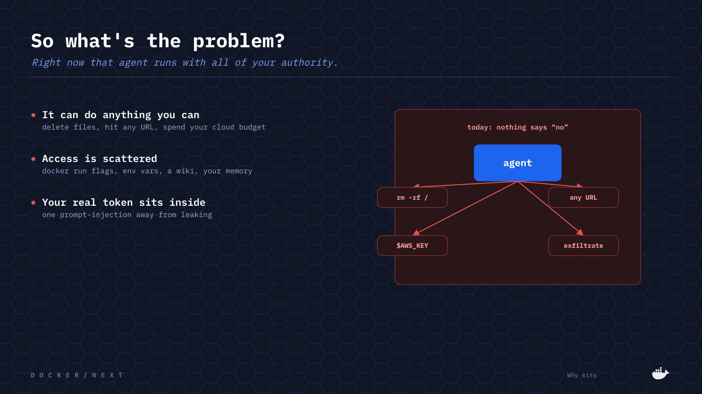
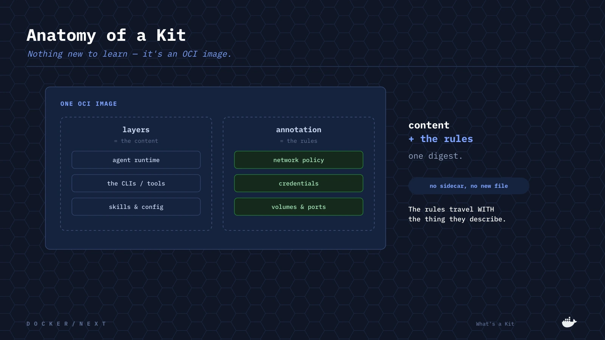
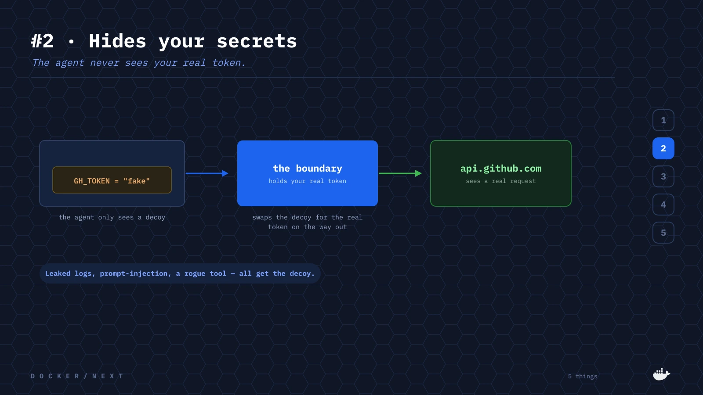
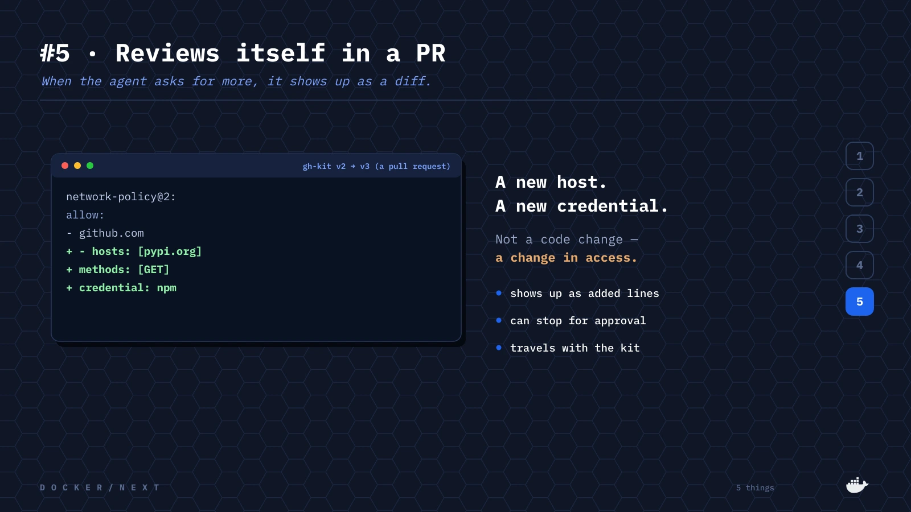
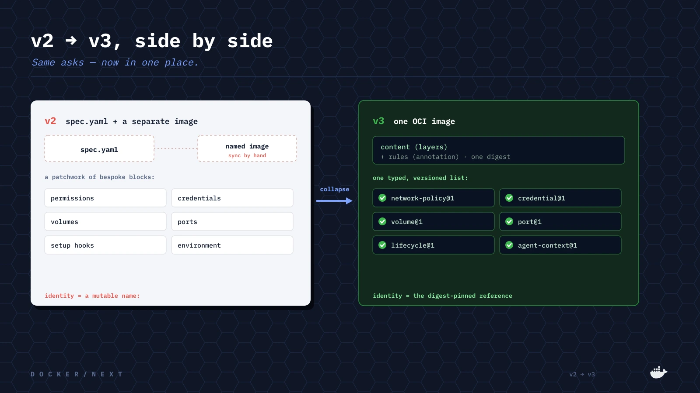
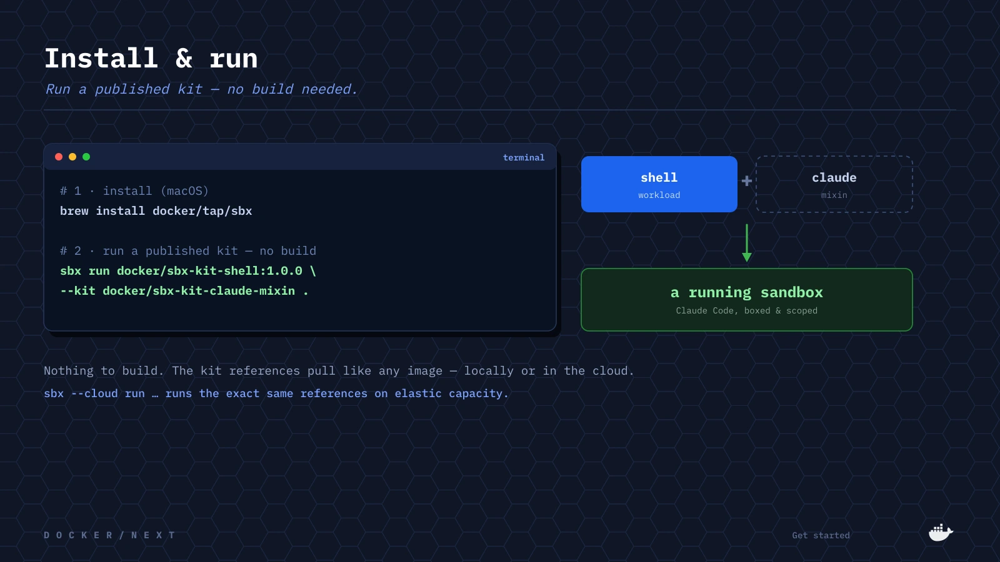

TL;DR
- A container isolates an application. An agent is an actor — it decides what to do next, with authority you grant. The boundary has to move from the container to the containment.
- A Kit is one OCI image that declares everything an agent needs from the world around it — network, credentials, volumes, tools, context — as one typed, versioned
capabilitieslist. - Authority becomes diffable and gatable: a new host or credential shows up as added lines in a pull request, and a runtime can auto-approve within scope and stop on any widening.
- It's a specification, not a feature — vendor-neutral, with conformance suites. Docker Sandboxes is the first implementation, not the only one.
- v3 moves on from v2 for concrete reasons: a kit is now one image, mixins ship real binaries as layers, and the capability schema is open and versioned.
A Dockerfile answers everything about the software itself: how it's built, what gets packaged, and how it starts. That answer was worth a decade of tooling — the same bits build, pull, and run the same way on every machine that has ever heard of an OCI image.
Then we started shipping agents. And an agent is not a static application workload. A container isolates an application: a thing that runs, does its job, and touches only what it was handed. An agent is an actor. It decides what to do next and then does it — to your filesystem, your network, your databases, your cloud account — with authority you granted on purpose.

01 · THE BOUNDARYThe container was never the boundary
That authority is not a flaw to be closed off; it is the point. An agent that cannot install a dependency, reach an API, or hold a credential cannot do the job. But every grant trades away a piece of the isolation you were counting on — which is how the capabilities that make an agent useful end up dissolving the walls around it.
So the boundary has to move out: from the container to the containment — the machine, the filesystem, the network, the credentials, everything the agent can reach or change. A sandbox supplies the part a model cannot argue with: its own kernel, a boundary that is enforced rather than agreed to. But an empty sandbox is not an environment. Something still has to say which harness runs, which tools and MCP servers it gets, which skills and instructions shape it, and exactly what it is allowed to touch.
02 · THE KITFrom Dockerfile to Kit
None of that is a Dockerfile's question. It specifies the inside of the image completely and the
outside not at all — so the other half has lived in docker run flags, a Compose file, a
CI config, an onboarding doc, and whatever the person who set it up still remembers. Outside the
artifact, unversioned, and unreviewable.
A Kit brings it in: the content and the authority it asks for, in one image, under one
digest. There is no Kit media type, no artifact type, no sidecar file. A Kit is one OCI image where
a manifest annotation — vnd.docker.sandbox.kit.descriptor — carries the Kit's
declarations and the layers carry its content.

Because it's an ordinary image, a Kit pulls with docker pull, gets inspected with
regctl, and can be FROM-ed like any other image. A registry that has never
heard of Kits stores one correctly, and an engine that ignores the annotation still runs it. There
are two kinds: a workload — the thing that runs, exactly one per composition — and
any number of mixins, overlays that add a CLI, a credential binding, a network rule,
or context for the agent.
03 · AUTHORITY AS CODEThe permission slip
Here is where it gets concrete. This is the gh mixin — read it like a permission slip.
# gh.yaml — a mixin capabilities: - type: network-policy@2 allow: - github.com - hosts: [api.github.com] deny: - hosts: [api.github.com] methods: [DELETE] paths: [/repos/**] # deny wins - type: credential@1 apiKey: {name: GH_TOKEN, proxyManaged: true}
It reaches GitHub and nowhere else. It allows most API methods — but not deletes under
/repos/**. So the token can open a pull request, and it cannot delete the
repository. And the credential is proxy-managed: the runtime injects the real value at the
boundary; inside the sandbox only a sentinel ever exists.

The principle underneath is simple: asks, not grants. A Kit never grants itself anything — it asks, in a typed, versioned request. The host decides. A conforming runtime enforces. A required capability that cannot be satisfied refuses the launch — fail closed; an optional one degrades gracefully.
Composition is a function, not a sequence
Mixins are ordered by their dependency graph — provides and requires —
not the order you typed the flags. The same set always composes to the same image: lockable,
reproducible, cacheable. Resolution is strict on purpose: exactly one workload, every requirement
satisfied from inside the set or resolution fails, and two Kits providing the same name is an error
rather than silent shadowing.
The diff is the review
Because authority now lives in the artifact, git already reviews it. When the next version of an agent asks for another credential or another network destination, that is not a software update — it is a change in authority. It shows up in the diff, it can stop for approval, and it travels with the thing it describes wherever that thing runs.

04 · WHY v3What v3 fixes — in the engineer's words
v3 is a real break from v2, and the reasons are practical. In a walkthrough of the new spec, the Docker engineer who built it laid them out plainly. The headline change is one sentence:
“The biggest change… it's kind of this tiny sentence here: a kit is one OCI image. And because it's just an image, you can use normal
— Docker engineer, v3 spec walkthroughdocker buildto create kits anywhere you want in CI — you don't have to installsbxor any special tooling.”
Three concrete problems drove the redesign:
apt-get in a lifecycle hook —
which “makes the whole sandbox startup kind of slow.”On top of those, v3 adds provides / requires — namespaced and versioned —
so kits can declare their dependencies and sbx run verifies the whole set is satisfied
before it starts. As the engineer put it, the goal was to make kits “more self-coherent… easier to
compose, with a lot more ways of expressing restrictions and dependencies.”
Why migrate from v2 to v3
If you already ship Kits, the move is a collapse, not a rewrite. A v2 kit was a
spec.yaml plus a separately-built named image, kept in sync by hand, with a patchwork of
bespoke blocks — permissions.network, credentials[], volumes[],
ports[], setup hooks, environment, agentInstructions.

network-policy@1, credential@1, volume@1, port@1, lifecycle@1, agent-context@1.v3 collapses all of it into one OCI image and one typed, versioned capabilities list:
kind: sandbox becomes kind: workload with a Dockerfile recipe, and the
setup hooks become the lifecycle capability. Identity is now the
digest-pinned consumption reference, not a mutable name: field. The
same asks — now diffable, gatable, and composable. Decoding is strict, so a leftover v2 key is an
error rather than a silent no-op. One caveat worth knowing up front: v3 kits can't compose with v1 or
v2 kits, so don't mix the two. The claude and claude-mixin examples in
the repo are a real v2 kit migrated faithfully, and the spec ships a
field-by-field mapping
to walk you through it.
05 · A SPEC, NOT A FEATUREVendor-neutral by construction
Why a specification and not a product feature? Because a Kit that stops being useful when you run
it somewhere else is not a trust boundary — it is lock-in. The grammar is normative, two conformance
suites ship with it (one asks “is this a valid Kit?”, the other “does this runtime behave to spec?”),
and capability types version independently — network-policy@1 and @2
coexist, so Kits that resolve today keep resolving. Docker Sandboxes is a first-class implementation,
not the only one.
And while agents made this urgent, ordinary workloads always arrived with unwritten expectations too — which endpoints they call, which credentials they need, which volumes must survive a restart. That knowledge lived in Helm charts, runbooks, and colleagues. Kits make authority reproducible for all of it — just as Dockerfiles made building reproducible.
Try it
Kits v3 ship in the stable sbx line, in both local and cloud mode. There is nothing
to install for the frontend itself — BuildKit pulls docker/sandbox-kit:3 when it reads
the # syntax= line.
# install (macOS) brew install docker/tap/sbx # run a published Kit — a shell workload + the Claude mixin sbx run docker/sbx-kit-shell:1.0.0 --kit docker/sbx-kit-claude-mixin . # the local loop — no registry, no push. Edit hello, re-run; only hello rebuilds. cd examples sbx run ./hello --kit ./gh . # the same references run in the cloud sbx --cloud run docker/sbx-kit-shell:1.0.0 --kit docker/sbx-kit-claude-mixin

Dockerfiles made software reproducible.
Kits make authority reproducible.
docker/sandbox-kit-spec
Grammar, JSON schema, capability pages, and the conformance suites.
Docker Docs → Sandboxes
The stable CLI, local and cloud. Rancher Desktop works; Docker Desktop not required.
Verified Publisher Kits
Browse v3 Kits on Docker Hub. The docker org publishes v3.
v2 → v3 field mapping
The field-by-field port, and the judgment calls a migration turns on.